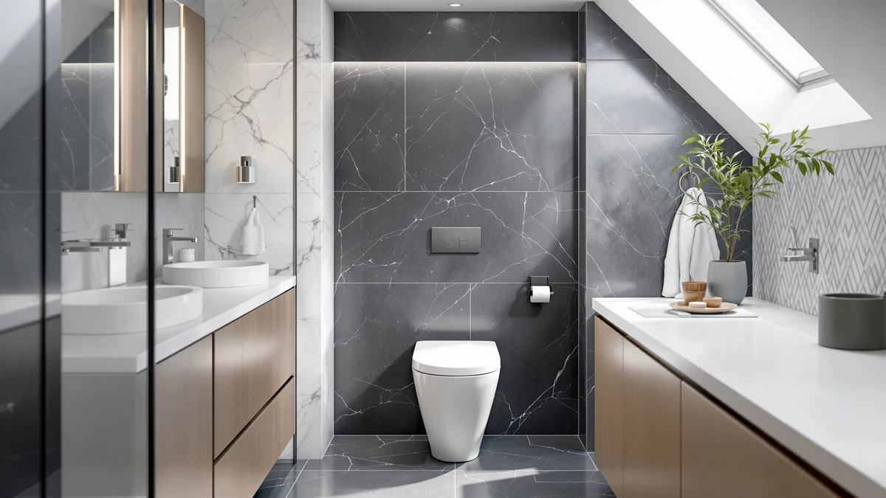

Moen ET900 2 Series Review (2026): Worth It?
Prices and picks verified as of August 2026. Independent, reader-supported reviews.


Quick Answer
This Moen ET900 2 Series review centers on a $1,482.70 tankless bidet toilet, the priciest option among the four models compared here. If you want bidet functionality without Moen's price tag, the EPLO Smart Toilet Bidet and CANEST FC-001P below cost hundreds less, while the EPLO Smart Toilet One Piece rounds out the group at the lowest price.
Our pick: Moen ET900 2-Series Tankless Bidet — $1,482.70 Check Price on Amazon
Bottom line: our top pick is the Moen ET900 2-Series Tankless Bidet One Piece Elongated Bidet at $1.
Things to Know Before You Buy
- Moen prices the ET900 2-Series at $1,482.70, the most expensive of the four models in this Moen ET900 2 Series review.
- The ET900 is a tankless bidet toilet, a category that trades a traditional gravity tank for an integrated wash system.
- EPLO's Smart Toilet Bidet costs $659.96, over $800 less than the Moen and the closest bidet-equipped alternative in price.
- The CANEST FC-001P ($629.99) and EPLO Smart Toilet One Piece ($599.96) both undercut the Moen by more than $850.
This Moen ET900 2 Series review looks at whether the $1,482.70 price tag on Moen's tankless bidet toilet is justified next to three lower-priced alternatives covered on this site. Moen builds the ET900 around a tankless design, skipping the traditional gravity tank in favor of an integrated wash system, and prices it well above the other three models in this comparison. We pulled together Moen's own product listing, including the four images Moen publishes of the toilet from different angles, and set it beside the EPLO Smart Toilet Bidet, the CANEST FC-001P Bidet Toilet, and the EPLO Smart Toilet One Piece, three models that cover the same general one-piece toilet category at a fraction of Moen's price.
The short version: if a tankless bidet system matters to you and price is not the deciding factor, the Moen ET900 2-Series is worth a look, but it costs over $800 more than the EPLO Smart Toilet Bidet, the closest bidet-equipped alternative in this group, and nearly two and a half times what the EPLO Smart Toilet One Piece charges. Pick the Moen if you want a tankless system built by a plumbing brand with a long manufacturing history. Pick one of the three alternatives below if price matters more than the tankless design itself.
Why You Should Trust Us
Ilane Tall has spent more than ten years researching bathroom fixtures, including one-piece and smart toilets, for Best One Piece Toilets. She built this Moen ET900 2 Series review by comparing Moen's own published listing against the closest competitors on price and category, the same side-by-side process the site uses for every review. We do not accept payment from Moen, EPLO, or CANEST to influence placement, and our Amazon links earn a commission only if you buy, which does not change what we recommend.
Our Research Experience
For this Moen ET900 2 Series review, we started with Moen's own product listing: the four photos of the toilet from multiple angles, the tankless bidet design, and the $1,482.70 price. We then lined up the ET900 against every other bidet-adjacent one-piece toilet already covered on Best One Piece Toilets, narrowing the field to the EPLO Smart Toilet Bidet, the CANEST FC-001P Bidet Toilet, and the EPLO Smart Toilet One Piece, three models that span the price range from budget to mid-tier. None of the four has built up a public review count on the listings we pulled, so we weighted our evaluation toward the facts we could verify: published price, product category, and brand, rather than guessing at long-term durability we cannot confirm firsthand. That gap is also why we lay out each toilet's documented price and category side by side instead of ranking them on star counts that don't exist yet, and it's a limitation worth keeping in mind as you read the rest of this Moen ET900 2 Series review.
Overview & Specs

Moen ET900 2-Series Tankless Bidet
What we like
- Builds a tankless bidet system into the toilet, skipping the traditional gravity tank other one-piece toilets rely on
- Comes from Moen, a plumbing brand with decades of manufacturing history behind it, unlike some of the newer names below
- Moen publishes four images of the toilet from multiple angles, giving you a fuller visual sense of the design before you buy
Flaws but not dealbreakers
- Priced over $800 higher than the EPLO Smart Toilet Bidet, the next closest bidet-equipped model in this Moen ET900 2 Series review
- No public rating or review count on the listing we pulled, so you're relying on Moen's own description rather than verified buyer feedback
- At $1,482.70, it costs nearly two and a half times what the EPLO Smart Toilet One Piece charges for a standard one-piece toilet
| Material | — |
| Size | — |
Moen builds the ET900 2-Series around a tankless design, replacing the gravity tank found on most one-piece toilets with an integrated wash system that pairs the toilet and bidet function into a single unit. That tankless approach is the main reason to consider the ET900 over the toilet-only alternatives further down this Moen ET900 2 Series review, since you pay for a plumbing-brand engineered wash system rather than a bidet seat bolted onto a standard bowl. Moen's listing includes four images of the toilet from different angles, giving you a closer look at the tankless housing and control layout than a single product photo would, and that level of documentation matters when you're spending close to $1,500 sight unseen.
At $1,482.70, the ET900 sits well above the other three toilets in this comparison, and that gap is the central trade-off you need to weigh before you buy. The EPLO Smart Toilet Bidet, the closest alternative with its own integrated bidet, costs $822.74 less at $659.96, while the CANEST FC-001P and the EPLO Smart Toilet One Piece both come in under $650. None of the four listings we pulled has built up a public review count yet, so the decision comes down to how much you value Moen's plumbing-brand pedigree and tankless engineering versus the price you pay to get it.
What We Liked
The clearest advantage in this Moen ET900 2 Series review is the tankless design paired with Moen's manufacturing pedigree. Instead of buying a one-piece toilet and then shopping separately for a bidet seat or attachment, the ET900 folds a tankless wash system into a single $1,482.70 unit built by a company with decades of plumbing fixture experience, which sets it apart from some of the newer brands in this comparison. Moen also documents the toilet with four images from different angles, more visual coverage than a bare product photo offers, and that helps you judge the tankless housing and control panel before you commit to spending this much. For buyers who have already decided they want a tankless bidet system from an established name and don't want to gamble on a newer brand, that combination is worth the premium Moen charges for it.
What Could Be Better
The biggest drawback in this Moen ET900 2 Series review is price relative to the field. At $1,482.70, the ET900 costs $822.74 more than the EPLO Smart Toilet Bidet, the next closest bidet-equipped model, and nearly two and a half times what the EPLO Smart Toilet One Piece charges for a standard one-piece toilet. Moen also has not accumulated a public rating or review count on the listing we pulled, so we can't confirm long-term durability or real-world bidet performance beyond what Moen's own product description states. That missing track record is a real gap when you're spending this much on a bathroom fixture, and it's worth factoring into your decision alongside the price itself. If your bathroom doesn't strictly need a tankless system from a legacy plumbing brand, that price gap is hard to justify next to the cheaper alternatives below.
Who Is It For?
The Moen ET900 2-Series fits buyers who have already decided they want a tankless bidet system and would rather buy it from an established plumbing brand than a newer name. Anyone remodeling a bathroom from scratch and willing to pay a premium for that brand pedigree and tankless engineering will find it a reasonable match too. Shopping mainly on price? The EPLO Smart Toilet Bidet in this Moen ET900 2 Series review covers the same bidet-equipped category for $822.74 less. And if brand history matters less to you than raw price, the EPLO Smart Toilet One Piece handles a standard one-piece toilet for a fraction of what Moen charges.
Alternatives to Consider
If the $1,482.70 price gives you pause, these three toilets cover similar or adjacent ground to the ET900 for meaningfully less money, and each is worth a look in this Moen ET900 2 Series review.

Editor’s Pick
EPLO Smart Toilet Bidet with
EPLO's Smart Toilet Bidet matches the ET900's core idea, a bidet built into a one-piece toilet, but costs $822.74 less at $659.96. It's the closest direct alternative to the Moen in this comparison if you want bidet functionality without paying for Moen's tankless engineering and brand name.
$659.96
Check Price on Amazon
Best Value
CANEST FC-001P Bidet Toilet 17"
CANEST prices its FC-001P Bidet Toilet at $629.99, over $850 less than the ET900, and still delivers an integrated bidet in a 17-inch one-piece design. It won't carry Moen's brand history, but it's worth considering if you want bidet functionality on a tighter budget.
$629.99
Check Price on Amazon
Premium Choice
EPLO Smart Toilet One Piece
The EPLO Smart Toilet One Piece rounds out this comparison at $599.96, the lowest price among the four models in this Moen ET900 2 Series review. It's the pick if price matters more to you than the tankless bidet system Moen builds into the ET900.
$599.96
Check Price on AmazonFrequently Asked Questions
Is the Moen ET900 2-Series worth $1,482.70?
It's worth $1,482.70 if you specifically want a tankless bidet system from an established plumbing brand rather than a bidet seat added to a standard toilet. If price matters more than that brand pedigree, the EPLO Smart Toilet Bidet in this Moen ET900 2 Series review saves you $822.74 at $659.96.
How does the Moen ET900 compare to the EPLO Smart Toilet Bidet?
Both the Moen ET900 and the EPLO Smart Toilet Bidet build bidet functionality into a one-piece toilet, but the Moen costs $822.74 more at $1,482.70 versus EPLO's $659.96. Neither listing we pulled has built up a public review count yet, so the decision comes down to brand and price rather than verified performance.
Do you need a tankless bidet toilet like the Moen ET900, or will a standard one-piece toilet work?
If you want a wash system engineered without a traditional gravity tank, a tankless bidet toilet like the Moen ET900 makes sense. If you don't need that feature, the EPLO Smart Toilet One Piece in this Moen ET900 2 Series review covers a standard one-piece toilet for $599.96, well under half what the Moen charges.
Final Verdict
This Moen ET900 2 Series review comes down to a straightforward trade-off. Moen's ET900 delivers a tankless bidet system built by an established plumbing brand, at $1,482.70, the highest price among the four models we compared, and without the public review history that would let us confirm long-term performance firsthand. If you want that tankless design and Moen's manufacturing pedigree and price is not the deciding factor, the ET900 is a reasonable buy at that price. If you'd rather save money or don't need a tankless system specifically, the EPLO, CANEST, and EPLO alternatives above are worth a look.